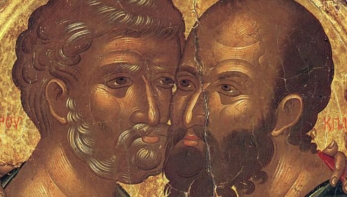

Будут ДВОЕ - ОДНО. ИЗРАИЛЬ и ЦЕРКОВЬ
Часть дерева отказалась от ствола, ее держащего и провозгласила себя целым....
Читайте также "Израиль и Церковь — две половины одного сердца" - взгляд с другой стороны.
На крышке Ковчега были также двое - серафимы, обращенные лицами друг ко другу. Вглядеться в иного, увидеть и понять в нем себя - единственный путь богопознания и самопознания. Мир пока "подсел" на зеркало как на иглу: от самокопания до неистового истребления непонятного. /Ольга Медведева/
По сей день голос Павла, повелевавшего по всем церквям (1Кор.7:17) каждому (иудеям и эллинам) пребывать в своем призвании, остается неуслышан.
Некогда укрепившись, Община верующих из язычников отринула своих братьев - Общину спасенных из Израиля. Часть дерева отказалась от ствола, ее держащего, и других ветвей. Часть провозгласила себя целым.
Я хотел бы показать мое понимание откровения Павла об Израиле и Церкви на примере принципа, когда речь идет о двух, которые составляют одно нераздельное целое.
Сотворение Адама и Хавы (Евы) - величайшее таинство творения Божия, бывшее запечатанным до времени. Открытая Павлу, - эта тайна, скорытая от прежних родов, так и не стала откровением для всей общины верующих Иудеев и Элинов вот уже около двух тыс. лет.
Не только о семье Адама говорит здесь Библия, но и о Божьем народе, о котором Предвечный помыслил от начала: двое - будут одно. Не Израиль только, которого избрал Всевышний, но и люди из всех народов, призывающие имя Господне, и Иудеи, и Эллины, по плану Бога, - двое должны стать одно. Община Божья из обрезанных и Община Божья из необрезанных, исполняя при этом КАЖДАЯ СВОЕ ПРИЗВАНИЕ, должны составить единое Тело Мессии.
Итак в самом начале Бог творит Адама, затем, усыпив его, отделяет от него часть и создает Хаву (Еву). Интересно здесь то, что Бог не воспользовался в этом случае другим куском глины, из другого месторождения, иного состава и цвета. Творец берет цельного человека, о котором сказал «весьма хорошо», отделяет от него часть, создавая из нее Хаву. Таким образом пред Ним предстают уже двое из рода человеческого. Затем этим двум Бог дает повеление стать одним целым («и будут двое одна плоть» Быт.2:24).
Неисследимы пути Господни. Казалось бы, радуйся единому цельному совершенному человеку. Но Он делит его на два, дав им в свою очередь поручение вновь стать одним целым.
Вероятно, здесь речь идет о единстве иного уровня, в котором части целого существуют нераздельно и неслиянно. Ведь и Адам, и Хава были сотворены Всевышним без их на то согласия. Когда Бог повелевает им стать одним, тут уже требуется их согласие на то и изъявление их свободной воли. Ведь это они – те, кому предстоит пройти процесс взаимной притирки и глубинных изменений, чтобы стать одним целым.
Вначале Он отделяет их, чтобы дать им возможность осознать себя как индивидумы. И уже затем, через изъявление своей свободной воли, через отказ от своего эго, они становятся одним нераздельным целым – одной плотью. При этом необходимо внести небольшую ремарку: становясь одной плотью ни Адам, ни Хава не утрачивают своих характерных признаков и функций, т.е. Адам не превращается в женщину, также и Хава не становится мужеподобной.

Разумеется, тут не может быть буквальных параллелей, но призвание Израиля и Церкви из народов очень напоминает сотворение Творцом первых людей и заповедь им данную от начала – будут двое – одно. Избрав Израиля Себе в народ, на определенном этапе Всевышний как бы рождает из него, выделяет себе еще Церковь из народов, искупая тех и других совершенной жертвой Своего Сына, делая их СОнаследниками обетований Божьих.
Он выделяет Церковь из Язычников, через Петра и Павла, повелевая Израилю и Церкви – двум общинам Божьим оставаться теми, кем они призваны (1Кор.7:17-18...) и при этом стать единым достигающим полноты и совершенства Телом.
Если посмотреть внимательно, заметим интересную деталь: везде, где Павел говорит об откровении нераздельного и неслиянного единства, он на одном дыхании говорит также и о семейных отношениях и поясняет свои мысли образом человеческого тела, состоящего из разных членов, состоящих в единстве и гармонии между собой.
Родившаяся в недре Израиля и выделившаяся из него, Церковь начинает осмысливать себя. Осознает себя также и принявший Мессию начаток Израиля (начаток Израиля – залог спасения всего народа, как написано: «Весь Израиль спасется» (Рим.11:26).
В самом начале – это короткий период бурной любви между Общиной обрезанных и Общиной необрезанных. Затем – они выясняют отношения и ссорятся, вплоть до отторжения и «развода».
Но план Божий – ДВОЕ, СОСТАВЛЯЮЩИЕ ОДНО, - однажды осуществится.
см. также видео на эту тему
автор: Эфраим Калиш
читайте также:
"КАЖДЫЙ оставайся В СВОЕМ ЗВАНИИ"
тему "ДВЕ МАСЛИНЫ. ИЗРАИЛЬ и ЦЕРКОВЬ" полностью см. здесь: